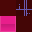

DYLAN GALLARDO
Project_Micro

Project Micro
An experiment with perspective and working tile maps (loading, slicing an img into separate textures). Allows zooming in and out to pretty extreme amounts, and inside each "microchip" is another layer you can take control of and move around. Collision detection is implemented, the hot pink tiles are collidable.
The scaling isn't infinite, after roughly 15 layers the maximum floating point value is reached, and the visuals spaz out. I didn't end up changing that limitation because the idea of having a barrier for the smallest thing that could exist was interesting.
The tile map for the project is below
